Overview
This article provides step-by-step instructions for configuring Entra Tenant Application Proxy for use with Netwrix Directory Manager (formerly GroupID). The process includes installing the outbound connector, configuring the application proxy, updating URLs, and managing SSL certificates.
Instructions
Configure Entra Tenant Application Proxy
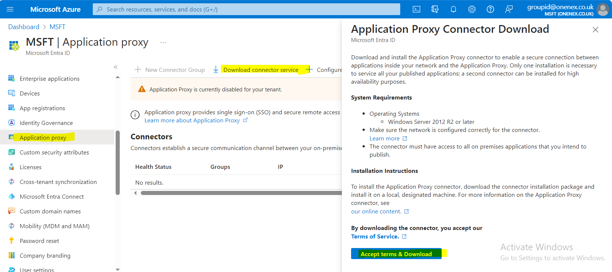
Install Outbound Connector on Directory Manager Machine
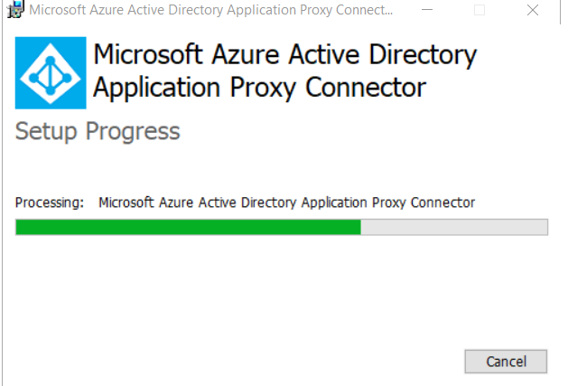
Configure Outbound Proxy
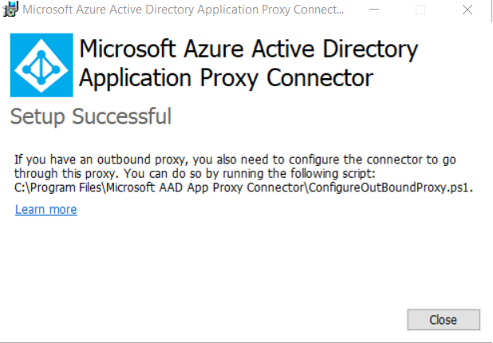
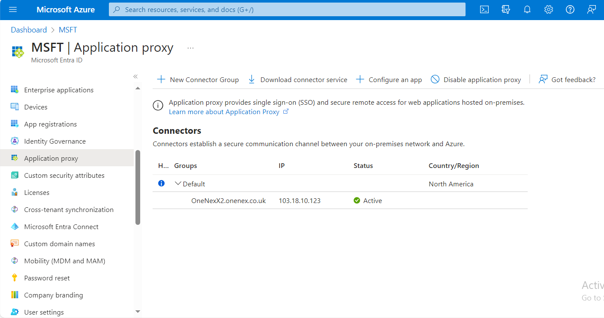
Configure the Application
- Click Configure an App.
- Provide a suitable name for the application.
-
Copy the external application URL:
https://GroupID10SSP-5l607h.msappproxy.net/GroupID/ -
Add the internal URL in the Application Proxy configuration:
https://onenexx2:4443/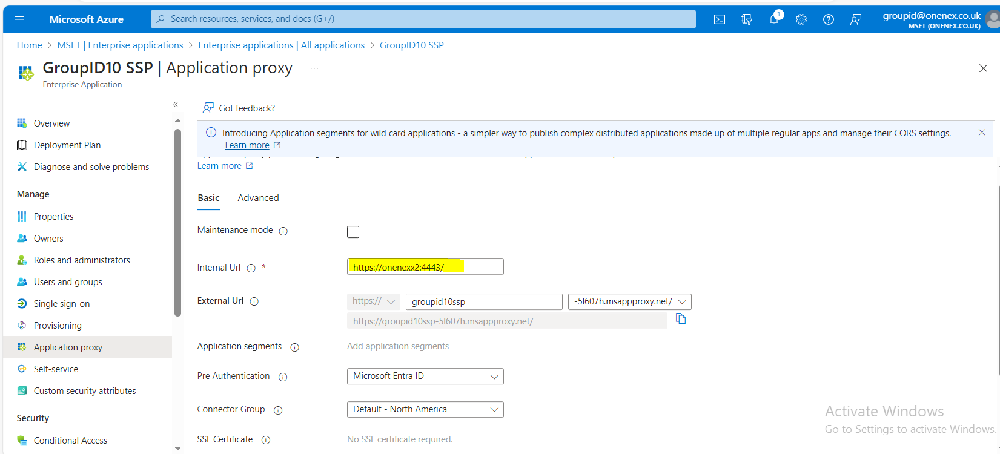
Register the Application and Assign Users
-
Go to App Registration and open All Applications.
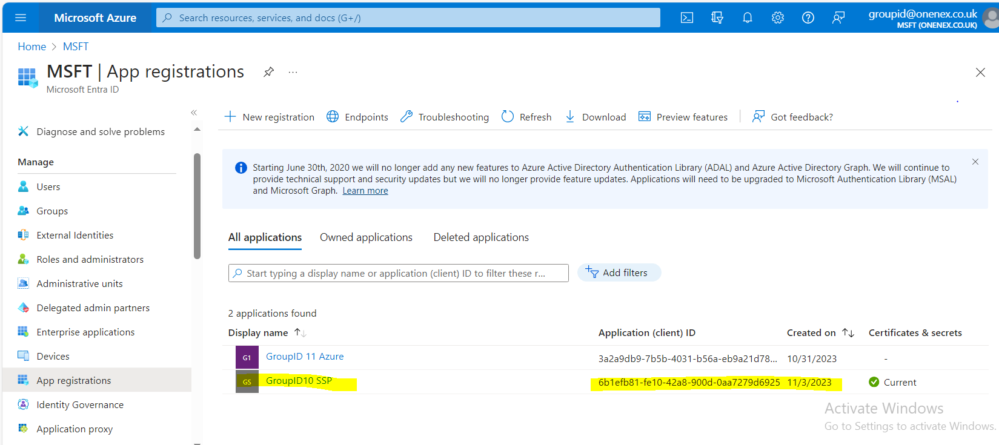Assign users to this application.
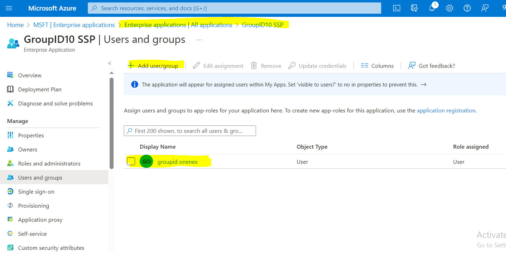
Create and Upload an SSL Certificate
-
Create an SSL certificate.
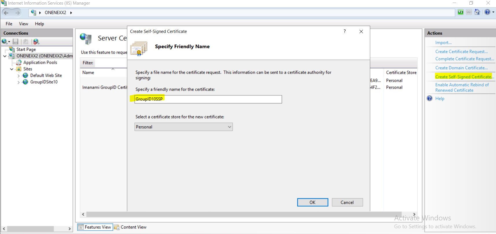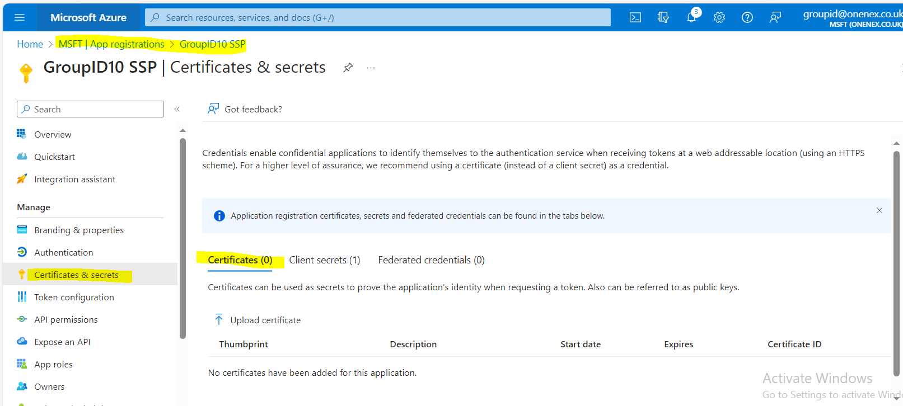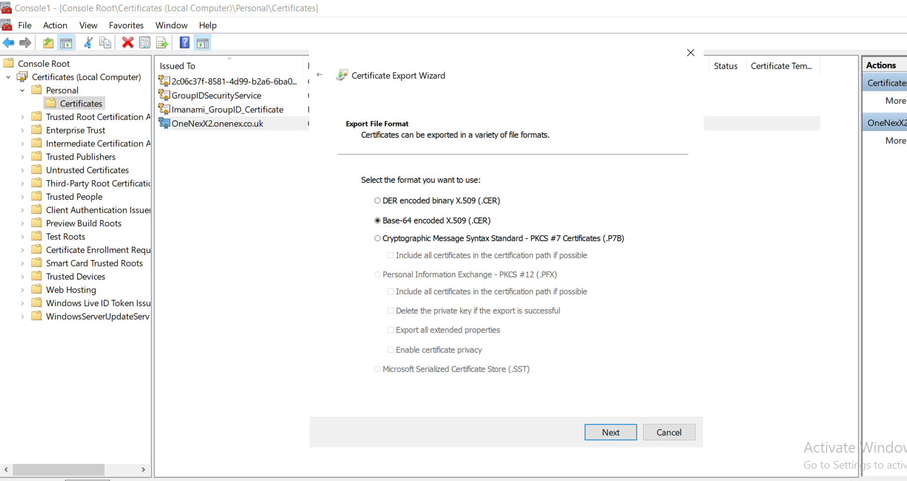
-
Upload the certificate.
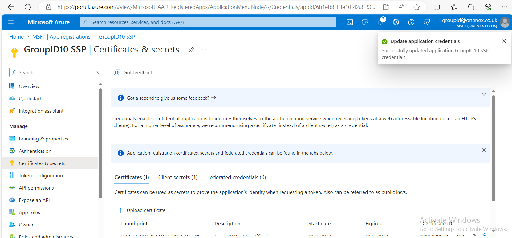
NOTE: Self-signed certificates will not work. Add a public certificate instead. You can turn off SSL in the application proxy to test the configuration.
Update Portal URLs with External URLs (Application Proxy)
- Change the portal URLs to use the external URLs provided by the application proxy.
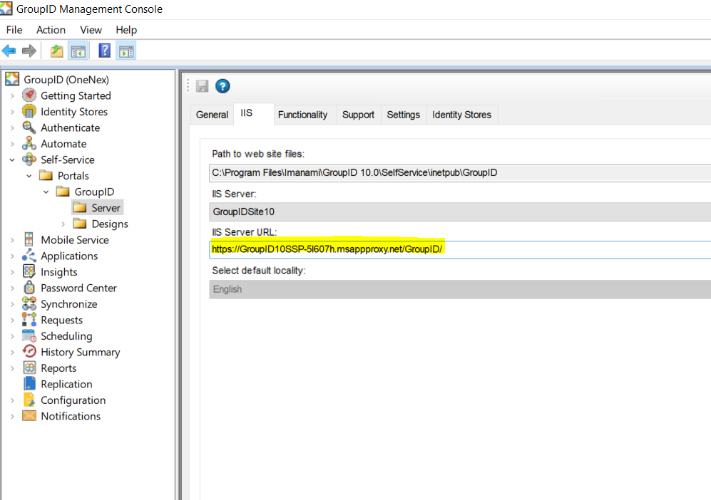
- Verify that the changes are reflected in the svc.client table and web.config file.
The following Web.config changes are required:
External URL: https://GroupID10SSP-5l607h.msappproxy.net/GroupID/
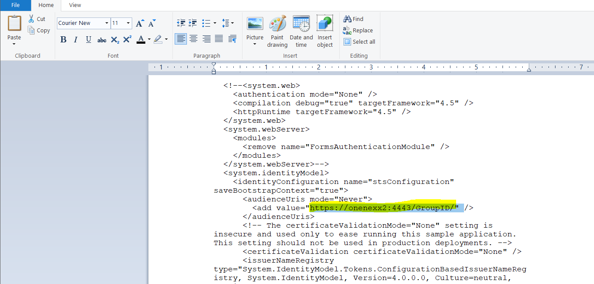
- Edit the Issuer and Realm URLs as needed:
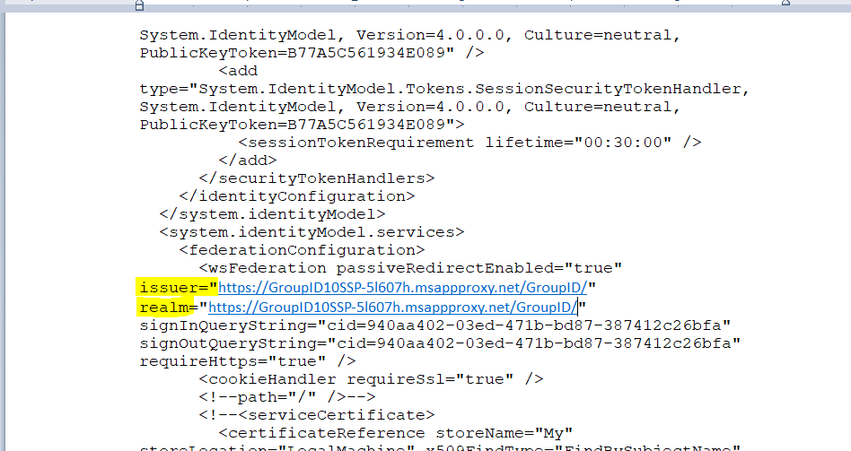
- Update the svc.client table in the database with the return, error, and realm URLs.
NOTE: Paste all URLs with a forward slash at the end. For example: https://groupid10ssp-5l607h.msappproxy.net/GroupID/
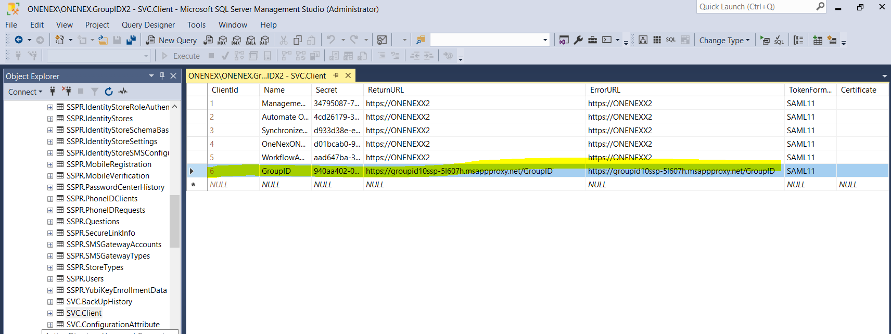